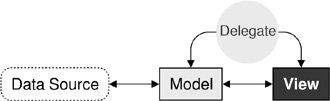
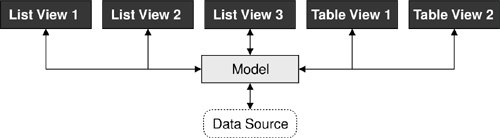

Chapter 10. Item View Classes
Many applications let the user search, view, and edit individual items that belong to a data set. The data might be held in files or accessed from a database or a network server. The standard approach to dealing with data sets like this is to use Qt's item view classes.
In earlier versions of Qt, the item view widgets were populated with the entire contents of a data set; the users would perform all their searches and edits on the data held in the widget, and at some point the changes would be written back to the data source. Although simple to understand and use, this approach doesn't scale well to very large data sets and doesn't lend itself to situations where we want to display the same data set in two or more different widgets.
The Smalltalk language popularized a flexible approach to visualizing large data sets: modelviewcontroller (MVC). In the MVC approach, the model represents the data set and is responsible for fetching the data that is needed for viewing and for writing back any changes. Each type of data set has its own model, but the API that the models provide to the views is uniform no matter what the underlying data set. The view presents the data to the user. With any large data set only a limited amount of data will be visible at any one time, so that is the only data that the view asks for. The controller mediates between the user and the view, converting user actions into requests to navigate or edit data, which the view then transmits to the model as necessary.

Qt provides a model/view architecture inspired by the MVC approach. In Qt, the model behaves the same as it does for classic MVC. But instead of a controller, Qt uses a slightly different abstraction: the delegate. The delegate is used to provide fine control over how items are rendered and edited. Qt provides a default delegate for every type of view. This is sufficient for most applications, so we usually don't need to care about it.
Using Qt's model/view architecture, we can use models that only fetch the data that is actually needed for display in the view. This makes handling very large data sets much faster and less memory hungry than reading all the data. And by registering a model with two or more views, we can give the user the opportunity of viewing and interacting with the data in different ways, with little overhead. Qt automatically keeps multiple views in sync, reflecting changes to one in all the others. An additional benefit of the model/view architecture is that if we decide to change how the underlying data set is stored, we just need to change the model; the views will continue to behave correctly.

In many situations, we only need to present relatively small numbers of items to the user. In these common cases, we can use Qt's convenience item view classes (QListWidget, QTableWidget, and QTReeWidget) and populate them with items directly. These classes behave in a similar way to the item view classes provided by earlier versions of Qt. They store their data in "items" (for example, a QTableWidget contains QTableWidgetItems). Internally, the convenience classes use custom models that make the items visible to the views.
For large data sets, duplicating the data is often not an option. In these cases, we can use Qt's views (QListView, QTableView, and QtreeView), in conjunction with a data model, which can be a custom model or one of Qt's predefined models. For example, if the data set is held in a database, we can combine a QTableView with a QSqlTableModel.
|